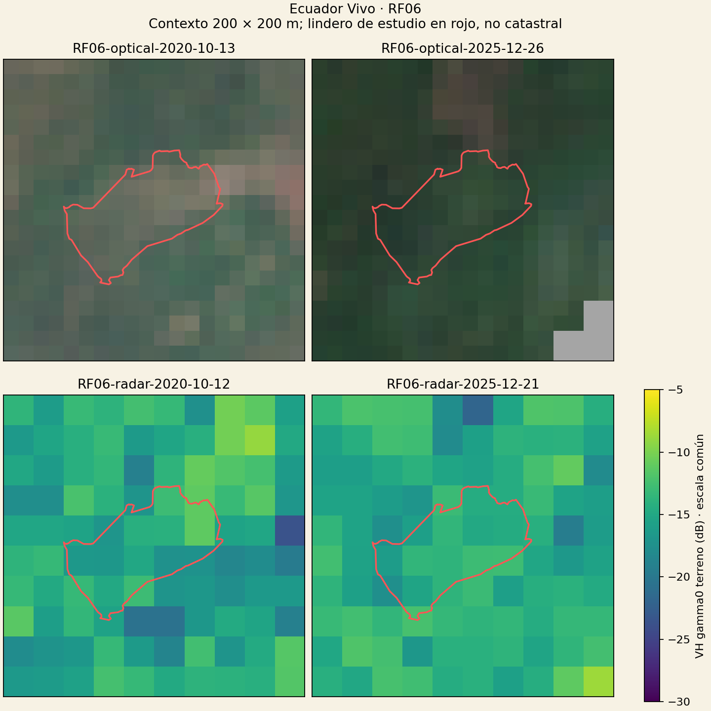
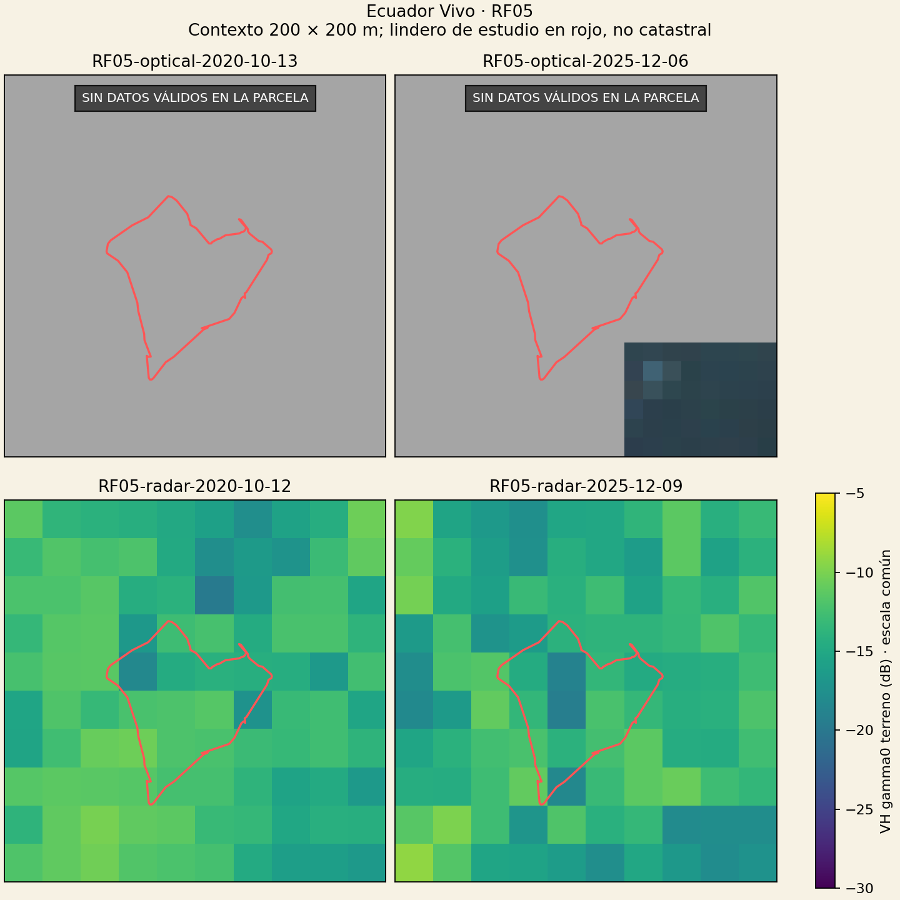

Cuaderno de investigación ·
¿Qué puede ver un satélite en una parcela de media hectárea?
Probamos imágenes ópticas y radar sobre dos parcelas de estudio ecuatorianas. El aprendizaje principal no fue detectar una tala: fue medir cuándo los datos alcanzan para comparar y cuándo debemos reconocer que no alcanzan.
Henry P. Conteron Moreta · Ecuador Vivo / Andes Pulso
Parcelas de investigación, no fincas completas
Usamos polígonos públicos del conjunto ReforesTree. De seis geometrías examinadas, conservamos para este ensayo las dos originalmente válidas: RF05 y RF06. Las otras cuatro requerían reparación topológica y quedaron fuera. Los códigos identifican parcelas de estudio, no propiedades certificadas.
| Parcela | Área | Centros a 10 m / celdas completas | Centros a 20 m / celdas completas |
|---|---|---|---|
| RF05 | 0,3976 ha | 39 / 24 | 10 / 3 |
| RF06 | 0,4757 ha | 48 / 30 | 10 / 5 |
Un cuadrado de área equivalente tendría unos 63 y 69 metros de lado, respectivamente; los polígonos reales son irregulares. Por eso una grilla de 10 metros ofrece pocos píxeles y una de 20 metros, todavía menos. El tamaño de píxel no equivale a precisión posicional ni garantiza distinguir objetos de ese tamaño.
Las imágenes de dron y los inventarios asociados al estudio no se usaron para validar una historia de deforestación. Un inventario o una fecha de siembra tampoco prueban cuándo se eliminó un bosque.
Cómo se hizo la comparación
- Descubrimiento: catálogos STAC de Copernicus para octubre–diciembre de 2020 y 2025. Se exigió cobertura del polígono y se comprobó la paginación. Cobertura de escena no significa que todos sus píxeles sean utilizables.
- Selección: tres fechas ópticas distintas por parcela y período, preseleccionadas por nubosidad de escena. Entre esos candidatos se eligió la mayor cantidad de centros válidos dentro del polígono; no fue una búsqueda exhaustiva de todas las imágenes despejadas.
- Radar comparable: Sentinel-1A GRD, modo IW, VV/VH, órbita relativa 40 descendente. Se emparejó con el óptico con una separación máxima admitida de 12 días. La respuesta del servicio se contrastó con el identificador de producto del catálogo.
- Recortes: contexto fijo de 200 × 200 m en UTM 17S (EPSG:32717), paso de salida de 10 m para óptico y 20 m para radar. Se descargaron 21 recortes, 124.928 bytes en total, sin descargar escenas completas. Las estadísticas excluyen el contexto exterior al polígono.
- Control de calidad: Sentinel-2 L2A en reflectancia, máscara de datos y clases SCL 4, 5 y 6; se descartaron valores no finitos, reflectancias roja/NIR negativas y sumas no positivas. SCL tiene soporte original de 20 m: remuestrearlo a 10 m no agrega información de nubes.
- Procesamiento radar: gamma0 corregido por terreno, ortorrectificación con DEM Copernicus de 30 m, máscara de datos/sombra y potencia positiva. Sin filtro de speckle. Esa máscara no constituye una evaluación completa de todos los efectos del relieve.
- Estadísticas: soporte válido común entre épocas, por sensor. Se compararon centros interiores y, por separado, celdas totalmente contenidas. NDVI = (NIR − rojo)/(NIR + rojo). Para VH se promedió primero la potencia lineal y después se aplicó 10 log10; no se promediaron directamente los dB.
Se conservan productos, fechas, solicitudes y huellas SHA-256. La verificación informática de integridad y grilla no sustituye una validación científica independiente.
Lo que sí observamos
RF06: datos comparables, no una explicación causal

| Métrica y soporte | 2020 | 2025 |
|---|---|---|
| NDVI, 48 centros | 0,5235 | 0,7454 |
| NDVI, 30 celdas completas | 0,5043 | 0,7438 |
| VH, 10 centros (dB del promedio lineal) | −14,5777 | −14,3837 |
| VH, 5 celdas completas (dB del promedio lineal) | −13,8830 | −14,0212 |
El NDVI fue mayor en la fecha seleccionada de 2025. Eso describe una respuesta espectral, no demuestra recuperación de bosque, aumento de biomasa ni ausencia de tala. Las fechas corresponden a meses diferentes y pueden intervenir estacionalidad, humedad, manejo y registro entre imágenes.
RF05: el vacío óptico también es un resultado

En radar quedaron 10 centros comunes, pero solo 3 celdas completas. VH pasó de −13,0719 a −14,1849 dB usando centros y de −12,5499 a −15,4842 dB usando celdas completas. La diferencia entre ambos resúmenes muestra sensibilidad al soporte espacial; no cuantifica por sí sola el error ni demuestra tala. No se estimaron intervalos de confianza ni significación estadística.
Mejor reconocer el límite que inventar certeza
Este piloto comprueba un flujo técnico de selección, recorte, máscaras, comparación y trazabilidad. No valida un detector de deforestación. Las dos parcelas no son una muestra representativa de Ecuador y no permiten medir la precisión general de un servicio.
- Una celda cuyo centro está dentro puede mezclar señales del exterior. Una celda totalmente contenida reduce ese problema geométrico, pero no elimina mezcla, incertidumbre de registro ni la respuesta espacial del sensor.
- Radar complementa al óptico bajo nubosidad, pero no produce una fotografía detallada del suelo ni identifica automáticamente el uso agrícola. Humedad, estructura y manejo afectan su señal.
- Dos épocas no establecen persistencia ni fecha del cambio. Este ensayo empieza en 2020: no responde cómo era el terreno antes.
- Suavizar los mapas mejoraría su apariencia, no su información. Aquí se conservan píxeles visibles, sin superresolución ni reconstrucción generativa.
- No hay hectáreas declaradas deforestadas, certificación, dictamen legal ni conclusión de cumplimiento EUDR.
Para avanzar harían falta series más densas, imágenes históricas adecuadas al tamaño del terreno, control de alineación y referencias independientes de cobertura y fecha de conversión. El aprendizaje es concreto: una herramienta responsable también debe poder decir «evidencia insuficiente».
Datos, trazabilidad y fuentes
Se publica una selección de resultados y metadatos: no credenciales, nombres de titulares, inventarios personales ni archivos de video. Los CSV distinguen celdas completas de centros; un valor vacío significa falta de soporte, no cero.
Qué contienen las descargas y cómo repetir la revisión
El JSON documenta parámetros, soporte, pares de fechas y métricas. El catálogo CSV identifica cada producto Sentinel, sensor, fecha y huellas de solicitud y respuesta. Las respuestas raster originales permanecen en el expediente local y no están incluidas en estas descargas; este paquete permite auditar lo publicado, pero no recalcular por sí solo cada métrica. Para repetir la adquisición se necesita acceso autorizado a Copernicus y los mismos productos, máscaras y grillas; el procesamiento remoto puede evolucionar.
- Reiersen, G. y colaboradores. ReforesTree, conjunto de datos original, CC BY 4.0. Derivados: extracción de polígonos a 2D y selección de las dos geometrías originalmente válidas; no se redistribuye el archivo completo.
- Artículo ReforesTree. Su objetivo de biomasa/carbono no equivale a una referencia validada de deforestación histórica para este ensayo.
- Copernicus Data Space Ecosystem: Sentinel-2 L2A: bandas, reflectancia y clasificación SCL.
- Copernicus Data Space Ecosystem: Sentinel-1 GRD: procesamiento y unidades de retrodispersión.
Resultados calculados por Ecuador Vivo. Referencias externas no implican aval de sus autores a nuestras conclusiones. Publicación técnica exploratoria; no revisada por pares.